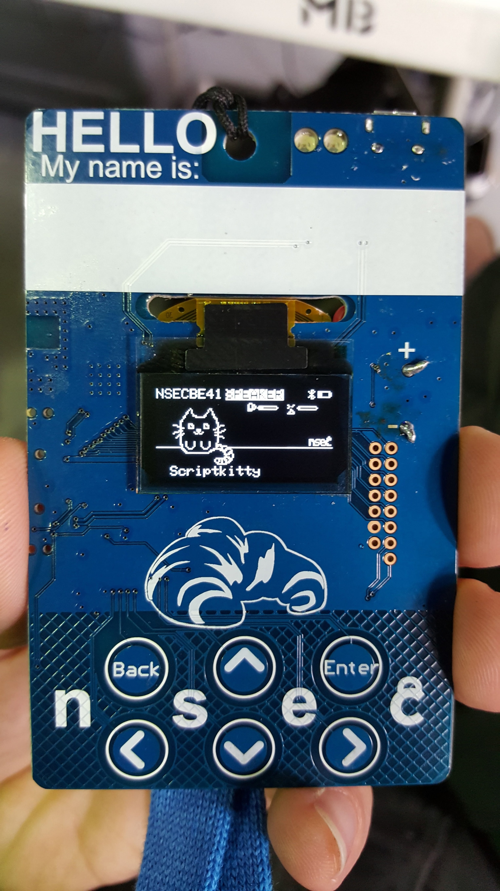
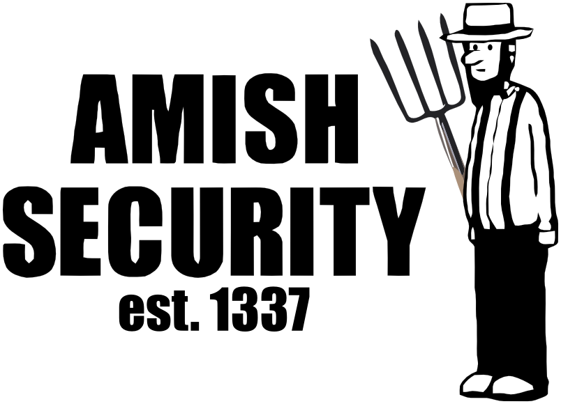
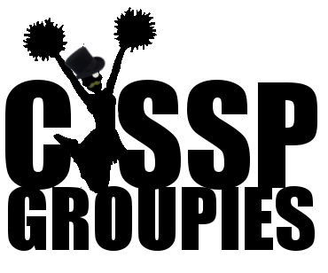
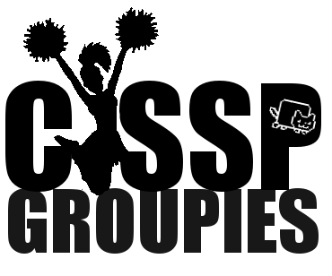
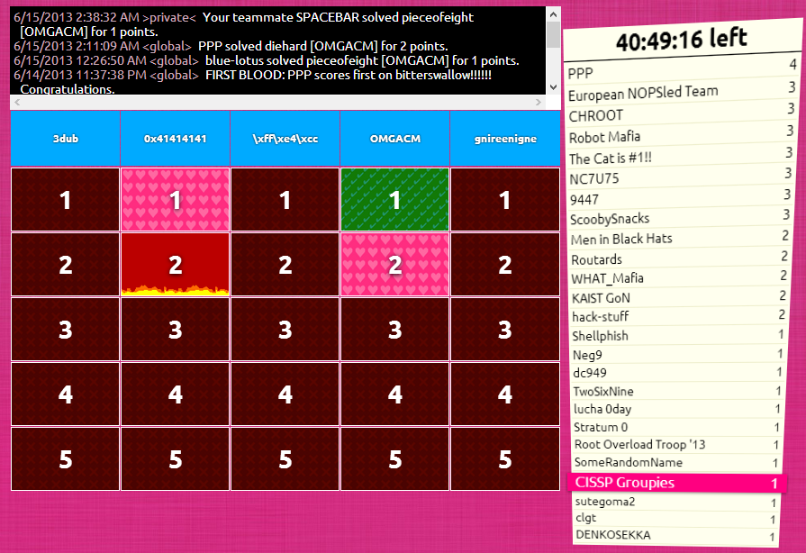
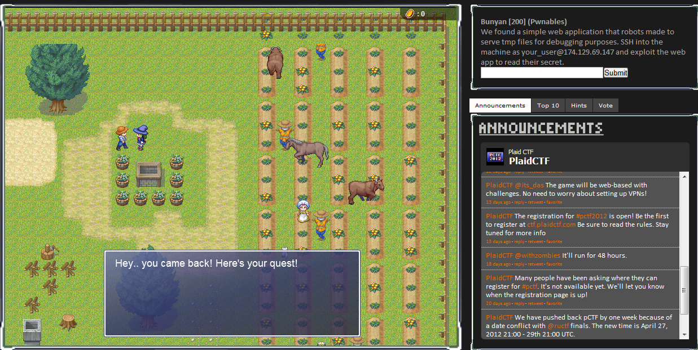
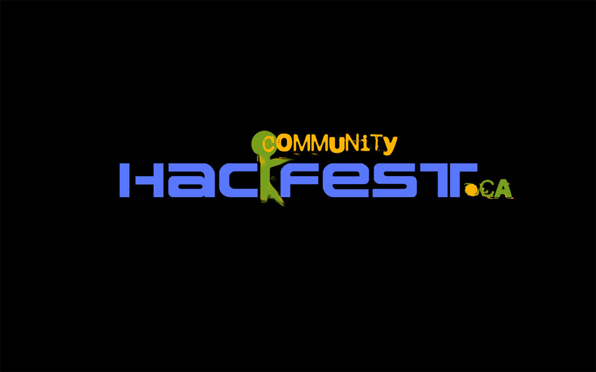
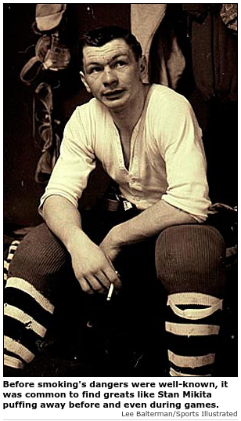
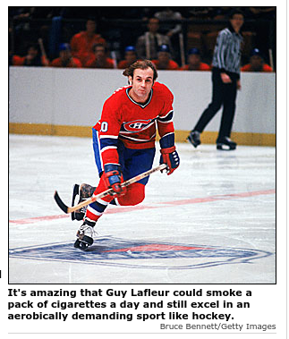

How [not] to suck at CTF
Warning
You are about to enter a mystical universe filled with inconsistencies and various types of abuse.
You have been warned.
Avertissement
Présentation surchargée d’anglicismes!
Avertissement
Stressez pas a prendre des notes de tools, y’a pas de contenu pertinent dans cette présentation.
$ whoami
Cybersecurity Researcher at GoSecure 
Co-founder MontréHack (hands-on security workshops)
VP Training and Hacker Jeopardy at NorthSec


CTF Experience
I’m off the Previous Generation of CTF players
Founder Amish Security
Founder CISSP Groupies
 
Anonymous

Troll

Monocle

Nyan cat

Grognons

Cuir cuir cuir moustache

un CTF c’est quoi?
CTF ⇒ Capture The Flags
Non pas comme ça…

Plutôt comme ça
Dans les faits ce sont…
hacking games
hacking puzzles
computer science puzzle
nerd puzzles
Myth: CTF are about information security
comment ça marche?
des gens créatifs et généreux font des scénarios et défis
les participants arrivent (ou se loggent)
on cherche des flags
on soumet les flags à un système de pointage
Les "fameux" flags
parfois sous la forme FLAG:abcdefgh…
sinon {FLAG:...}
ou encore The flag is: abcdefgh…
ou juste: 112f3a99b283a4e1788dedd8e0e5d35375c33747
ou même: ceciestunfantastiqueflag
mais après ont les voit partout!
La vie est un CTF
— Benjamin Vanheuverzwijn
Pourquoi participer?
apprendre!
sortir de sa zone de confort, constamment!
se trouver une job le fun
trouver du talent passionné
les contacts
Plus de la moitié des chercheurs dans notre équipe ont été rencontrés dans des compétitions de type "CTF". Le contexte de compétition nous permet rapidement de voir les compétences techniques et sociales d’un candidat. …
Plusieurs de nos chercheurs ont des problèmes de comportement et de consommation d’alcool mais c’est tout de même grâce à eux que nous pouvons nous vanter d’avoir la meilleure équipe de recherche en sécurité au Québec.
— Pierre-Marc Bureau en 2013 chez ESET Canada
Variantes
Cyberwar (managed, unmanaged)
Red vs Blue
Jeopardy board
Javascript-RPG
Batshit insane (iCTF)
…
Jeopardy Board

Javascript RPG

Perks
on-site || off-site || hybrid
besoin d’affiliation académique
limite de membres
Exemples de sujets explorés
Exploitation
Web
System
hw
Sujets explorés (suite)
Cryptographie
1st gen: craptographie, enigma
2nd gen: hashs, puzzles, small-RSA, password cracking, etc.
current-gen: crypto-oracle, big int maths
Sujets explorés (suite)
reverse-engineering
forensic
réseautique
stégano
Sujets explorés (suite)
recon
system hardening
algo
lock-pick
specialized platforms (Android, iOS, haiku, BSDs, VMS, …)
mais attention!
C’est de plus en plus dur
Tout le monde a une histoire
La mienne a commencé a la Boule de cristal du CRIM
Cipher CTF 4
Hey les enfants vous êtes a un vrai CTF
Ensuite, un bel âge
HackUS, Hackfest
Defcon Quals 18
iCTF, CSAW
… (iterate)
hack.lu
plaidctf
mozilla ctf
NorthSec
iCTF
Notre participation dégénéra
Tellement que…
le "Bilodeau" peak — hackfest 2011
Pour perdre tout CTF…
Rester seul

skiddie tools only
nmap
metasploit
Backtrack / Kali
Never read write-ups!
Never train.
Parce que le talent c’est inné
Never bookmark good tools
or never share them with your team
Communication
Ne jamais parler aux autres équipes pour discuter des épreuves
Ne jamais participer sur IRC, Slack (RingZer0, Northern Coallition)
Ne jamais imiter ses héros
Ne jamais sortir des sentiers battus
Jamais ça non plus…
Never code or learn to code
Jamais se fier aux outils ou aux notes des autres
Participer seulement si vous êtes certain de gagner!
On n’apprends pas en perdant.
Plus sérieusement
perdre c’est mieux!
Avoir une muse
trouver vous un spot
N’importe lequel!… Litéralement

Ne pas se décourager
Expliquer son 'challenge' a ses pairs
Causes désespérés
Avoir un département des causes désespérés.
Soyez proactifs pour batir une équipe
Batissez-vous un toolchain
Perdre aux compés difficiles
Pour être meilleurs aux compés plus faciles
Développez des "réflexes"
Voyez venir les tendances
Realité
Ce sont des exercices. Ce n’est pas réel. Il faut penser au-delà de ce qu’on voit [en entreprise] ou lit.
Admins
Les 'admins' veulent que vous réussissiez.
Aller plus loin
et former la relève de nos équipes
Montréhack
3e lundi du mois

HackFest Hackerspace
4e jeudi du mois au Cégep de Sainte-Foy

Enfin.. s’amuser!!!

Barman: La même chose? (quatre gin tonics)
[il sert…]
Barman: Vous êtes a quel rang dans votre compétition?
Moi: Premiers
Barman: lolwat!? Vous êtes les seuls qui buvez!!
CTF Generations
First Generation
Challenges were easier
Some competitions really poor
We were obnoxious, always drinking, yet still won
We had it easy
 
The Next Generation
Better educated
More resources online
Generally a lot stronger
Challenges are way harder
Conclusion
Y’en a pas de tool secret…
Failure is simply the opportunity to begin again, this time more intelligently. There is no disgrace in honest failure; there is disgrace in fearing to fail.
— Henry Ford
Questions?
Merci!